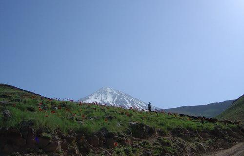

پذيرش > كوچه به كوچه > روزی با شقایق های دماوند/ مریم زندی


 روزی با شقایق های دماوند/ مریم زندی روزی با شقایق های دماوند/ مریم زندی
11 شهریور 1386 - - نسخه قابل چاپ
يكی از روزهاي نسبتاً خنك تير ماه ساعت 6:30 دقيقه صبح در ميدان انقلاب گرد هم آمدیم. دوستان از مناطق مختلف با كوله، ناهاروظرفی آب می آمدند. دو اتوبوس شدیم با گروه هایی از کوهنوردان و دوستداران طبیعت و چند تن از خانم هاي فعال در NGOهاي زیست محیطی . هر ساله به اشتياق ديدن شقايق هاي دامنه دماوند و پاكسازي كوهستان مي رويم تا يك روز را با مردم كه به ديدن گل ها مي آيند به گفتگو بنشينيم .
مريم مي آيد با نشاط با پدر و مادر هفتاد ساله اش. مي گويد هواي كوهستان براي آنها خوب است هر سال به ديدن شقايق هاي دماوند مي آيند.
در اتوبوس ، از فرصت استفاده مي كنم ، كنار زن و شوهر جواني مي نشينم و می گویم: از فعاليت هاي زنان چيزي مي دانيد؟ مرد با تعجب می گوید: مگر چه كار كرده اند كه بايد بدانيم ؟ گفتم" اسم كمپين يك ميليون امضاء را شنيده ايد ؟ شروع به توضيح دادن در مورد مطالبات زنان كردم. مرد خيلي زود جبهه گيري كرد وگفت: "شما ها فقط جوسازي مي كنيد. درسته اين ها قانونه ولي جايي اجرا نمي شه، الان خواهر من چند سالي است كه شوهرش مرده با دخترش همه جا مي رود سفرهاي خارجي و داخلي و هيچ مشكلي هم برايش پيش نيامده اين حرف ها چيه مي زنيد مخ زن من رو هم مي زنيد!!" (البته با شوخي)
گفتم : يعني شما نمي دانيد اگر خانمي شوهرش فوت کند واقعاً زن هيچ حق و حقوقي ندارد و فقط حق نگهداري فرزندانش را دارد و قيم پدر شوهرش است؟ خنديد و گفت: اين ها هست اما مشكلي برايش پيش نمي آيد كاري به او ندارند مثل خواهر من . از اداره سرپرستي برايش گفتم كه حتي در صورت نبود پدر شوهر، اداره سرپرستي روي زندگي يك زن (كه خودش بايد همه كاره بچه هايش باشد) سايه مي اندازد. مشكلات اداره سرپرستي را برايش گفتم باورش نمي شد دوستم را كه معلم است و چند سالي است شوهرش فوت كرده صدا كردم و گفتم برايشان توضيح بده كه چه مشكلاتي داري . بگو که حتي براي خريد يك كامپيوتر از اموال خودت وشوهرت و حتي براي باز کردن يك حساب بانكي هم براي بچه ها بايد از آنها اجازه بگيري. برايشان بگو ! بعد از حرف هاي دوستم آن مرد و همسرش هر دو صدايم كردند و برگه را امضا ء كردند. جالب اين بود كه همسرش گفت : من خودم با اينكه زنم ؛ از مشكلاتي كه زنان با آن دست به گريبانند اطلاع ندارم و از این بابت متاسف بود.
كنار پدر و دختري مي نشينم . رابطه دوستانه اي دارند و مرد از اينكه همسرش را در خانه تنها گذاشته بسيار ناراحت است مي گويد اين اولين باري است كه بدون همسرم بيرون مي روم ديگر اين كار را نمي كنم. دخترش مي خندد و مي گويد: بابا مرد خيلي خوبي است . گفتم: راستي از فعاليت هاي زنان چيزي مي دانيد؟ اين دفترچه رو ديديد؟ مرد با تعجب مي گويد چی هست ؟ گفتم بخوانيد. دخترش كه صاحب يك فرزند است دوباره مي گويد: پدر من خيلي آدم روشن فکریه، به همه جاي دنيا سفر کرده ، بعداز خواندن دفترچه کمپین، مرد مي گويد : خودتان راخسته نكنيد اينجا مملکت مذهبي ای است اين قوانين اصلاً عوض نمي شود. مي گويم مراكش رفته ايد ؟ مي گويد : "آره خيلي از اينجا جلوترند. ما خيلي عقب هستيم . قدر قوانين خانواده را كه در دادگاه ها داشتيم ندانستيم قدر شرايط را ندانستيم زنان آن موقع خيلي جلوتر بودند. گفتم اما الان چي ؟ من اصلا"اميدي به تغيير قوانين ندارم اين مملكت حالاحالا ها خيلي كار دارد ولي خوب سعي خودتان را بكنيد" و خودش و دخترش ورقه را امضاء كردند.
دوري در اتوبوس مي زنم و از برگه ها به همه مي دهم و مي گويم بخوانيد.
بالاخره به دماوند رسیدیم، آنهايي كه نگران هواي گرم در اين روزهاي تابستان هستند خنده بر لبشان مي نشیند. چند قطره اي باران مي بارد و ابرهاي خاكستري و سفيد بر سرمان سايه مي كنند. همه دوستان پير و جوان جليقه آرم پاكسازي كوهستان را مي پوشند ، يكي از دوستان كه از ديده بانان كوهستان است و همه زندگي اش صرف محيط زيست و حفظ پاكيزگي كوه ها است، صحبت مي كند. از همه مهمتر به دوستان مي گويد :
" سعي كنيد با مردم با آرامش صحبت كنيد به آنان آگاهي بدهيد كه كوهستان را دوست داشته باشند و آشغال نريزند و گل ها را نچینند . سعي كنيد خونسرد باشيد.
فرصت را مغتنم مي شمارم و با چند تن از خانم ها كه همراه هم براي جمع آوري زباله مي رويم حرف می زنم دفترچه کمپین يك ميليون امضاء را از كوله ام در مي آورم و می گویم:
" اين دفترچه را ديده ايد ؟" عده زيادي مي گويند نه اصلاً آن را نديده اند . مي گويند ما در خانه ايم از كجا بايد اين را ببينيم مگر اینکه از طریق روزنامه يا تلويزيون به ما اطلاع رسانی شود. مي گويم: خوب از طريق راديو و تلويزيون امكان اطلاع رساني نيست، روزنامه ها هم كه نمي نويسند، پس ما زنان خودمان بايد براي هم اطلاع رساني كنيم و برايشان از حق طلاق ، ارث ، تابعيت و ديه می گویم ، مي خندند و مي گويند مگر اين چيزها را مي شود تغيير داد گفتم : تجربه مراكش هست . گفتند : آنها سنّي مذهبند، ولی ما شيعه هستیم. به ما اجازه تغيير اين قوانين را نمي دهند. مي گويم خوب ،بايد اين قوانين تغيير كند يا نه ؟عده اي مي گويند خوب معلومه بله . مي گويم اگر واقعاً مي خواهيد اين قوانين تغيير كند بايد قدمي برداريد مي گويند اي كاش با امضاء كردن ما اين قوانين عوض شود ولي چشممان آب نمي خورد.
يكي از خانم ها صدايم كرد : با اين دوست من هم حرف بزن خيلي دلش پر است. خنديدم وگفتم: چرا؟
زن که خانم زیبا وجواني بود گفت :" اين دو تا بچه منو خسته کردند با اينكه تحصيلات عاليه دارم و مديريت خوندم بايد بخاطر اون ها تو خونه بنشينم". گفتم: چرا؟ گفت: "آخه شوهرم اینطورمیخواد و من شوهرم رو دوست دارم سر هر چيزي كه نميشه جرو بحث كرد، اون گفت بهتره بخاطر بچه ها سر كار نري يعني ازم خواست منم قبول كردم ولي ديگه خيلي بهم فشار مي آید، دوست دارم از خونه بيرون برم كاري انجام بدهم از همه چیز دور افتادم من تو دانشكده خيلي دختر شيطون و اجتماعي بودم اما حالا...". گفتم: حالا كه بچه ها بزرگ شدن هر دو به مدرسه مي روند ، اين فرصت خوبيست. شروع كن با اين سازمان هاي غير دولتي همكاري كن. كلاس هاي مختلف برو تا كم كم به جامعه برگردي. گفت: "آره ولي شوهرم اجازه نمیده".
گفتم: دوست من چند وقت پيش بيماري گرفت كه دكتر گفت ريشه اين بيماري تو بر مي گرده به اينكه تو كاري رو دوست داشتي بكني ولي نشده و ريختي تودل خودت و هميشه از اون رنج بردي و طي سال هاي سال به تو فشار آورده و حالا اينطوري بروز پيدا كرده. بقيه هم شروع كردن به تاسف خوردن. تلفن ها و آدرس هاي اينترنتي را به او دادم گفتم از حالا كه تابستونه و بچه ها هم تعطيلند شروع كن به فعالیت.
گفت: آره راست مي گي تقصير خودمه بايد شوهرم رو راضي كنم از جايي شروع كنم. و ورقه را از دست من گرفت و امضاء كرد و گفت : كار كردن حق هر زنيه !
به كنار پيرمرد و پير زني مي روم كه رابطه بسيار خوبي با هم دارند و از فعاليت هاي زنان برايشان مي گويم ، زن مي خندد و مي گويد: ما فقط آزادي و خوبي زن ها را مي خواهيم، خودمان چه دخترخوبی تربيت كرديم عرضه همه كاري رو داره و مي گويند از ما ديگه گذشته جوانها بايد اين رو امضاء كنند.
با بعضي از نوجوانان كه خسته از بازي فوتبال برگشتند حرف مي زنم با شوخي مي گويند آه باز هم اين فمینيست ها، شما ها اصلا"يك جوري هستيد مي گويم چطوري و مي خندند مي گويند: "همش مي گوييد زن ها . واي به روزي كه همه چيز دست شما بيفتد". به شوخي به آنها گفتم : حق داريد شما ها را ما بزرگ كرديم .
روز خوبي بود امضا گرفتن از زنان و مردان باعث شده بود چنددقيقه اي حتي سر ناهار روي كليت بي حقي زنان صحبت كنند مردي پرسيد اين ها كي هستند كدام ان جي او هستند و ديگري مي پرسيد كي پشت اين قضيه است ؟ و وقتي من مطرح كردم كه عده اي حقوق دان و فعالين زن به اين كار دست زدند مي گفتند خوبه مگه خود خانم ها کاری کنند. خانم معلمي گفت : فكر خوبيه حتي فكرش كه چي داره به سرما مي آد ديه ما نصف مرده ؟ "اين اصلا"منصفانه نيست مي دوني چقدر حق بيمه مي ديم آخر سر اگه بلايي سر ما بياد نصف يك مرد."
مرد ميان سالي مي گفت :من خيلي به خانم ها اميد دارم "اگه پشت قضيه اي رو بگيرن ديگه ولش نمي كنن" و خنده همگان.
چند تن از زنان كه در كارگاههاي توليدي مشغول كارند مي گفتند هيچكس نيست كه بپرسد كه چرا بايد يك زن كارگر يك عمر كار كند و اگر اتفاقي برايش بيفتند و بميرد همسرش و بچه هايش طبق قوانين تامين اجتماعي از هيج حقوقي بهره مند نباشند . اين تبعيض نيست !
به من مي گفتند :روي اين قضايا هم كار كنيد. روي همه ابعاد حقوق زن .
وقتي مي بينم خيلي از جوان ها كه معلم يا دانشجو بودند مي گفتند ما يك سال پيش اين برگه را امضا كرديم و با خوشحالي مي پرسيدند هنوز يك ميليون نشده ؟ بيشتر مصمم مي شدم كه هنوز براي فردا خيلي كار است بايد تمام لايه هاي زنان ومردان اين مرزو بوم از اين قضيه مطلع شوند. بايد خود خانم ها اصلا"متوجه اين قضيه بشوند كه بايد كاري كرد.
ارسال به
بالاترین
،
توییتر
،
فریندفید
،
فیسبوک
در همين بخش :
 روايت بيست و پنجمين شهريور / نرگس طیبات روايت بيست و پنجمين شهريور / نرگس طیبات
وقتی آتش خاموش شود/فرشته نوبخت
آن گاه که زن شدم / ویژه نامه 8 مارس 1391
چیزی زیر پوست این شهر می جوشد / دلارام علی
گرسنگی / وبلاگ سیب و سرگشتگی
ديگر بخش ها :
طرح یک میلیون امضا
|
مقالات
|
سایت نوشته ها
|
اخبار
|
گزارش كمپين
|
گفت و گو
|
علیه سکوت
|
كوچه به كوچه
|
نامه های شما
|
گزارش ویژه
|
گفتگو با اعضا
|
ویژه سالگرد کمپین
|
تصویر برابری
|
دل آرام علی
|
تریبون
|
مقالات
|
تاریخ شفاهی
|
خارج از چارچوب
|
کتابخانه
|
درباره کمپین
|
کمپین در شهرها
|
کمپین در بند
|
صدای تغییر
|
ویژه 22 خرداد
|
لایحه حمایت از خانواده
|
گالری
|
عشا مومنی
|
امیر یعقوبعلی
|
خدیجه مقدم
|
راحله عسگری زاده و نسیم خسروی
|
پروین اردلان،جلوه جواهری، مریم حسین خواه، ناهید کشاورز
|
زینب پیغمبرزاده
|
سعیده امین، سارا ایمانیان، محبوبه حسین زاده، ناهید کشاورز و همایون نامی
|
احترام شادفر
|
نسیم سرابندی زاده،فاطمه دهدشتی
|
وبلاگ مهمان
|
پرونده خرم آباد
|
دستگیری ها
|
مریم مالک
|
پرستو اللهیاری
|
مهرنوش اعتمادی
|
سمیه رشیدی
|
Other Languages
|
همراهان
|
«فراخوان کمپین ده روز با بهاره هدایت»
| English
|